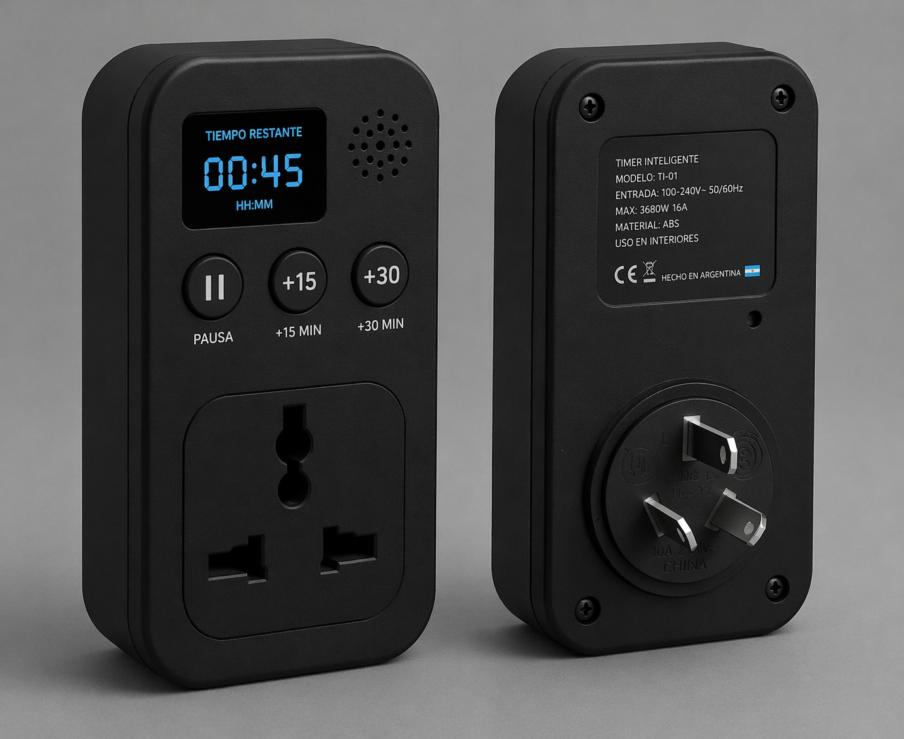

Devices plugged in
Devices stay plugged in even when not in use.
Eco Energy aims to reduce energy waste in homes, businesses, and society at large by promoting the responsible and efficient use of electricity. The project seeks to raise awareness about unnecessary energy consumption and foster sustainable habits that contribute to environmental protection and the proper use of energy resources.
Energy waste happens because many electrical devices remain plugged in even when they are not being used. This occurs due to lack of awareness, forgetfulness, and the absence of systems that help users monitor or control their electricity consumption. As a result, unnecessary energy usage increases electricity bills, contributes to environmental pollution, and leads to inefficient use of energy resources in homes, businesses, and society in general.

Devices stay plugged in even when not in use.

People forget to unplug devices.

Electricity consumption increases.

No reminder systems exist.

Environmental impact rises.

No tools to control energy usage.
The device seeks to reduce energy waste generated in households, since between 5% and 16% of electrical energy is wasted by leaving devices plugged in when they are not being used.
The solution will consist of an adapter with a timer that can be configured so that after a certain amount of time it produces a sound reminder indicating that the device should be unplugged.
It will include a small display showing the remaining time, a small speaker (buzzer) that produces sound when the counter reaches 0, and three buttons:

The device will be covered with ABS plastic, the same material used in many chargers. This material is important because it does not conduct electricity, resists impacts, withstands high temperatures, is inexpensive, and easy to manufacture.
The adapter will be compatible with electrical connections from different countries.